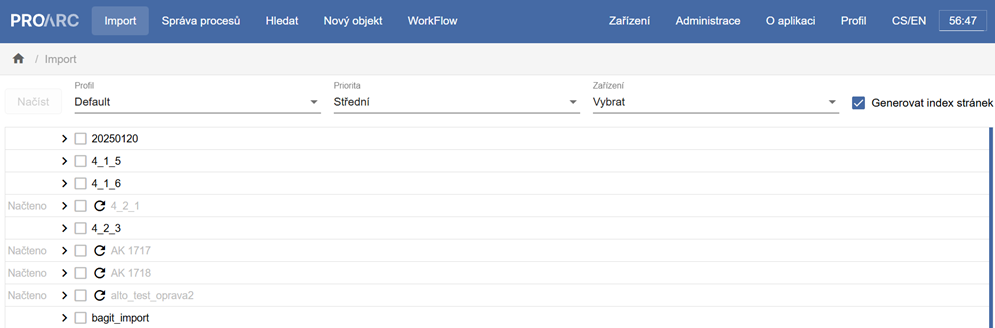
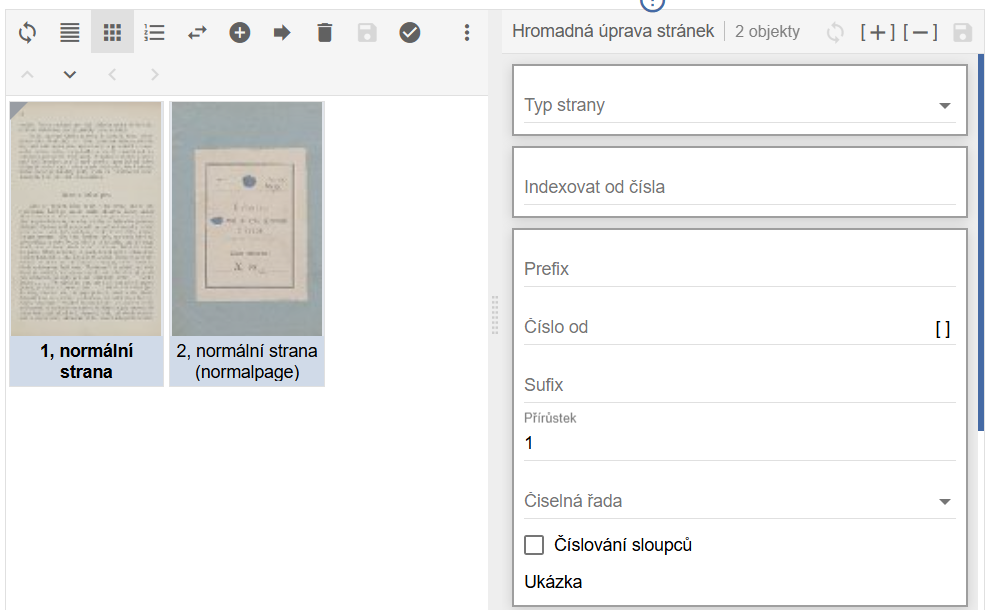
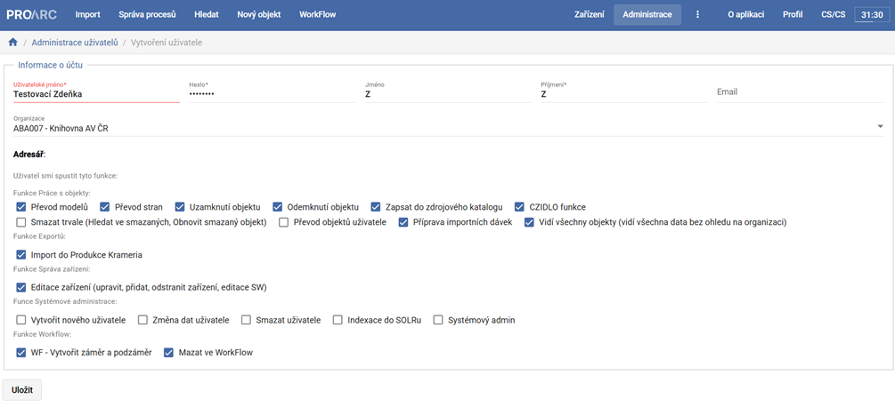
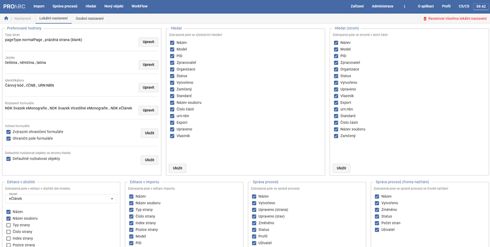
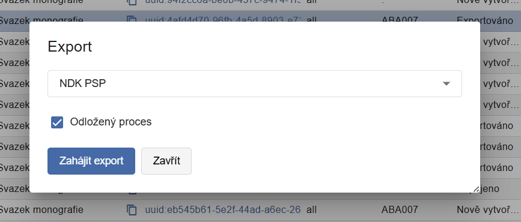

ProArc 4.3.4
Verze 4.3.4 obsahuje kompletní vývoj systému za rok 2025. Je určena pro fungování s ProArc Klient 2.4.3
Hlavní úpravy ve verzi 4.3.4
- Implementace nových Definic metadatových formátů (DMF) se zaměřením na elektronické publikace.
- Optimalizace uživatelské práce a rozhraní pro rychlejší paginaci, přehlednější správu importů a flexibilnější práci s uživatelskými rolemi.
- Optimalizace interních procesů a rozšíření možností hromadných operací nad daty.
Implementace nových Definic metadatových formátů (DMF)
Systém reflektuje změny v Definicích metadatových formátů (DMF) a v Pravidlech popisu dokumentů pro digitalizaci vydaných Národní knihovnou ČR vydané koncem roku 2024, přinášející změny zejména v oblasti elektronických monografií a periodik.
Jak je to s podporou Standardů zveřejných v roce 2025?
ProArc podporuje Definice metadatových formátů, které byly vydány na konci roku 2024 a byly tak aktuální v době podání žádosti do programu VISK 1, ze které byl vývoj v roce 2025 financován.
Definice metadatových formátů zveřejněné v prosinci 2025 jsou prioritou vývoje ProArcu v letošním roce. K dispozici budou v pre-release verzi pravděpodobně během léta 2026.
Společně s aktualizací DMF byly rozšířeny funkce usnadňující metadatový popis:
- Nově jsou automaticky kopírována metadata z titulové úrovně vícesvazkové monografie do jednotlivých svazků.
Kromě názvu publikace a informacích o původu titulu, jsou automaticky zkopírovány také údaje o autorech, jazyku, fyzickém popisu zdroje, poznámky, předmětová hesla, klasifikace, identifikátory a údaje o uložení popisovaného dokumentu. - V souladu s DMF byla doplněna možnost přidávání příloh k hudebninám.
- Proběhla revize povolených hodnot podle aktuálních Pravidel popisu. Byly doplněny nové typy (např. „Doslov“, „Závěr“) a odstraněny již nepodporované hodnoty. Systém nyní aktivně upozorňuje na nutnost opravy u starších typů dokumentů při pokusu o export.
- Přidána podpora pro propojování tištěných a elektronických periodik. Systém nově umožňuje spravovat tištěné i born-digital ročníky pod jednou titulní úrovní při zachování správných metadatových standardů pro oba typy (adekvátní nastavení elementů genre a physicalDescription při exportu). To řeší situaci, kdy tištěný titul plynule přejde do výhradně digitální podoby.
Optimalizace uživatelské práce
- Upravena obrazovka s importními dávkami. Na začátek seznamu importních dávek byl přidán nový sloupec se stavem „Načteno“. Již hotové položky jsou nyní vizuálně potlačeny (zašednuty). Přidány nové sloupce, které umožňují rozlišit mezi úpravou jednotlivých stran a změnou celkového stavu dávky. Podle těchto sloupců lze nově řadit i filtrovat.

- Rozšířeno vyhledávání, které nyní podporuje hledání podle signatury nebo čárového kódu.
- Možnost volby zobrazovaných sloupců na různých obrazovkách.
- Úpravy při paginaci a hromadných úpravách stran: V editoru byla pro jednotlivé strany přidána tlačítka pro rychlé ozávorkování, která změnu uloží okamžitě bez nutnosti potvrzování ikonou diskety. Formulář hromadných úprav byl přeuspořádán do logičtějšího pořadí „Prefix – Číslo od – Sufix“ a přibyla nová funkce pro hromadné nastavení reprezentativní strany.

- Revize systému správy uživatelů, rolí a oprávnění: Nová koncepce nahrazuje pevné role systémem detailních oprávnění (checkboxů). Administrační rozhraní bylo redesignováno a oprávnění jsou logicky seskupena do kategorií (např. práce s objekty, export, systémová administrace).

- Uživatelské preference se nově neukládají do mezipaměti (cache) prohlížeče, ale přímo do databáze. Nastavení (např. tloušťka ohraničení formulářů, často používané hodnoty, rozvržení obrazovek) jsou tak vázána na uživatelský účet a jsou k dispozici na jakémkoliv zařízení či prohlížeči.

- Integrace se systémem PERO-OCR. Nyní lze volat generování textové vrstvy ALTO/OCR nad více stranami najednou a uživatelé si mohou vybírat z dostupných modelů jak při hromadných korekcích z editoru, tak v rámci importních profilů.
- Systém umí vygenerovat v importní složce ALTO a OCR soubory. V konfiguraci je nutné nastavit příslušný importní profil.
- Nebo je možné ALTO a OCR generovat přímo v rámci importu stran do ProArcu. V konfiguraci je nutné nastavit příslušný importní profil.
Optimalizace a kontroly procesů
- Zavedena funkce odloženého spouštění procesů (import, export, mazání): Tato funkcionalita umožňuje přesunout systémově náročné operace mimo pracovní dobu, čímž se předchází přetížení infrastruktury během dne. Čas pro spouštění odložených procesů lze konfigurovat.

- Zrychlení nahrávání PDF souborů (typicky u e-článků a e-monografií): Původní proces, který při nahrání PDF souběžně generoval náhledový obrázek (thumbnail), byl rozdělen na dvě části. Systém nyní po nahrání souboru umožní uživateli okamžitě pokračovat v práci, zatímco náhledy pro systém Kramerius se generují automaticky na pozadí jako samostatný proces.
- Zefektivnění mazání dat: Systém nyní pracuje se složitějšími strukturami logicky po jednotlivých celcích od nejnižšího po nejvyšší úroveň. Mazání se nově objevuje ve správě procesů.
- Přidány nástroje pro hromadné čištění dat, jako je funkce pro trvalé odstranění objektů s příznakem „smazáno“ nebo rozhraní pro vkládání seznamů UUID k hromadnému smazání. Nově byla implementována také funkce pro vyhledávání a odstranění tzv. sirotků, tedy objektů (stran, kapitol, článků), které ztratily vazbu na nadřazenou úroveň a v systému existují osamoceně.
- Implementovaná upravená kontrola validace UUID: nově obsahuje výjimku pro starší pravidla tvorby identifikátorů, což umožňuje bezproblémový import historických dat ze systému Kramerius, která nemusí splňovat současné syntaktické normy.
- Rozšířena podpora importu dokumentů ve formátu FOXML, která nově zahrnuje i vícedílné monografie.